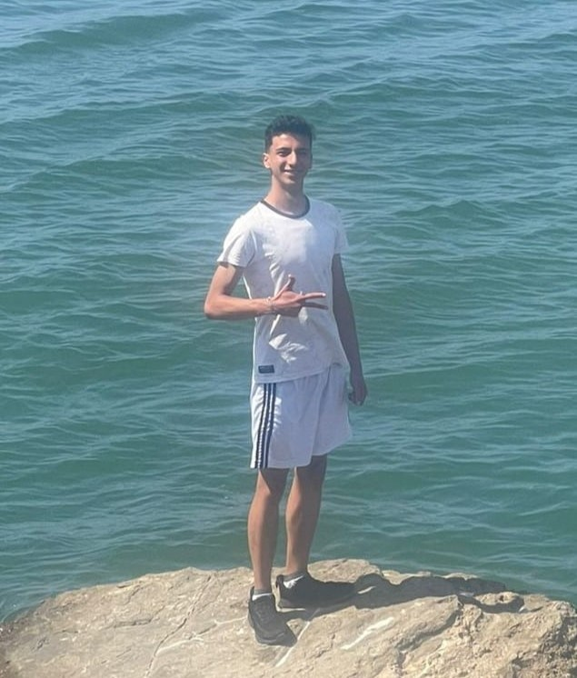

About me
Hello, my name is Amir Cabarcas Sanchez. I'm eighteen and I'm living in Madrid, Cundinamarca; I'm from Colombia and I was born on October 31st of 2006; I'm preparing to go on a mission. I was born (October 2006) in Bogota (the Capital of Colombia) but right now I'm living in Madrid, Cundinamarca; I grew up until the age of 7 years in Bogota, and since 2013 so forth until today (November of 2024), right now I'm helping to the church to give classes of "English Connect" in my ward (Madrid). I like a lot the video games and the music. I like playing soccer with the members of the church every Saturday because I like to do sports, I never like to stay quiet in one place or during the week, I consider myself very smart but one defect of myself is that I'm lazy, but I use that defect to improve or look for one better way to do the things, fast and of way correct.
Cundinamarca, Colombia
The state of Cundinamarca has a lot of biodiversity because the central mountain range passes through Cundinamarca and we have many mountains and / or hills; in Cundinamarca is the capital of Colombia which is Bogota, Cundinamarca is surrounded by Boyaca, Caldas, Tolima and Meta.